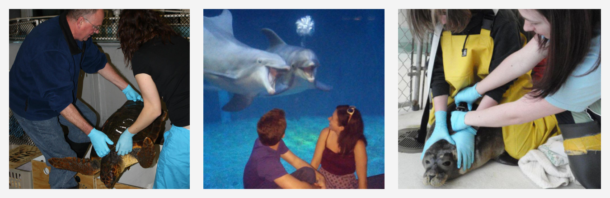

I’m a marine biologist and science communicator by training, but I’m taking all of the data analysis, statistics, and mathematical modeling skills I’ve learned (and continue to learn) and I’m now applying them to new problems.
I’ve always loved science, exploration, and discovery. My natural curiosity, love of animals and the environment, and constant pursuit of knowledge led me into a marine biology and chemistry double major in college (BS/BA) and a Master’s degree in Marine Sciences. That generally leads people to think that I was “playing with animals” all day.
And while I did get to work with some amazing animals over the years…

Only about 5 - 10% of my time was spent working with animals. The rest was spent designing experiments and working with data.
When a co-worker introduced me by saying “This is Amber, she does data analysis”, I realized that, indeed, I was a data analyst (who happened to work with marine data).
So, I decided to pursue the analytical side of my work and enter the world of data science. I’ve been taking lots of classes, working on lots of personal projects, joining local Meetups, and looking for work in the field.
I’m always looking for new people to chat with and new problems to solve, so feel free to reach out to me!